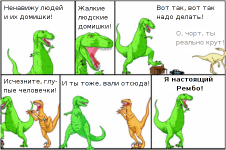

Вольный перевод известной картинки.

- Ненавижу людей и их домишки! Жалкие людские домишки! Вот так, вот так надо делать!
- О, чорт, ты реально крут!
- Исчезните, глупые человечки! И ты тоже вали отсюда! Я настоящий Рембо!